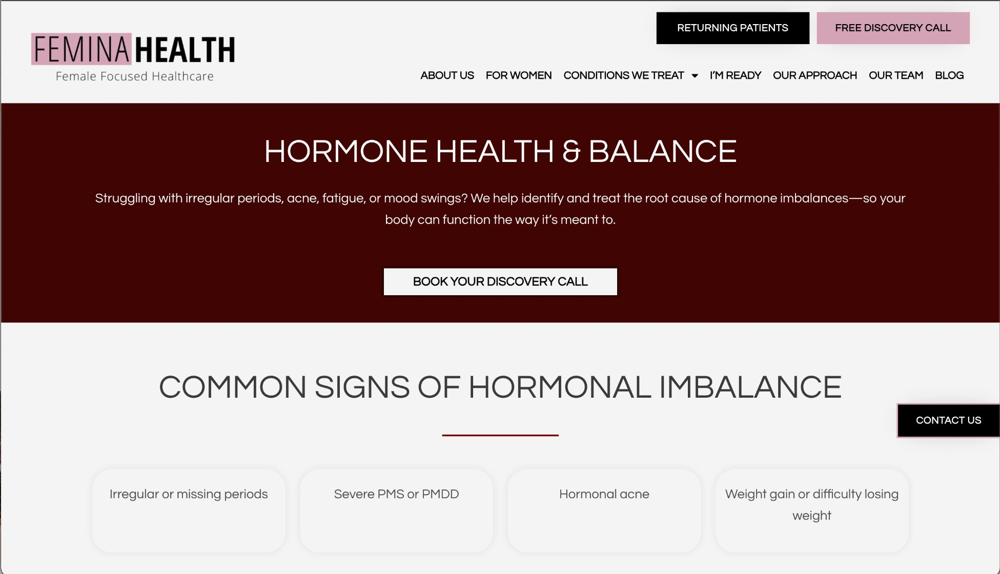
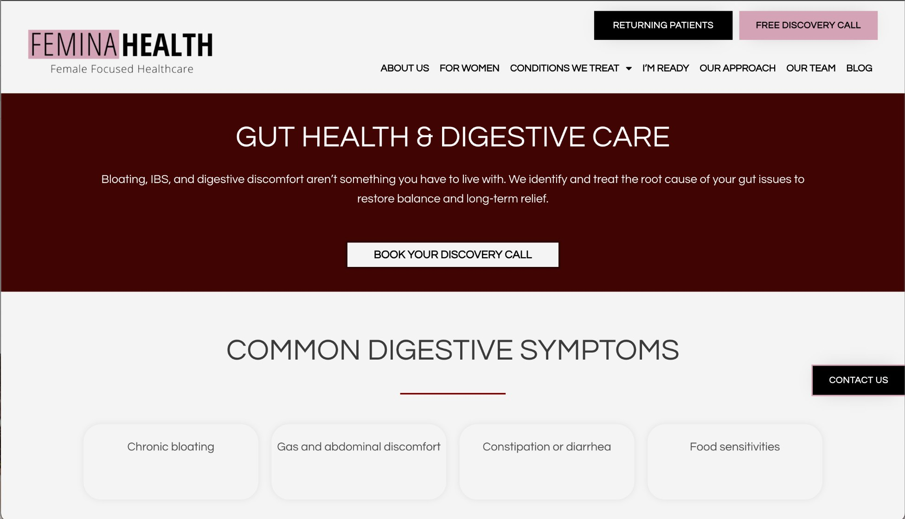
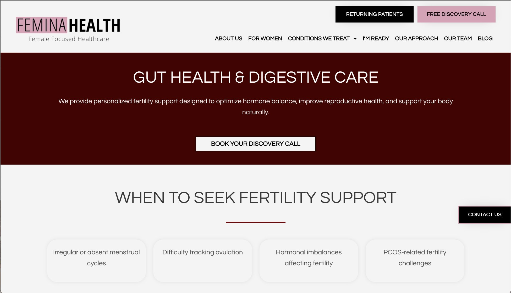
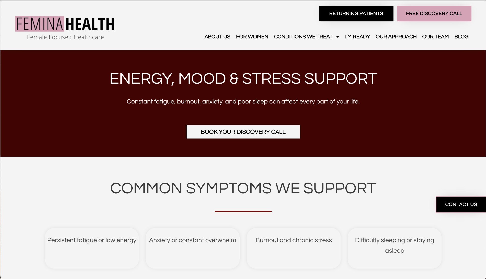
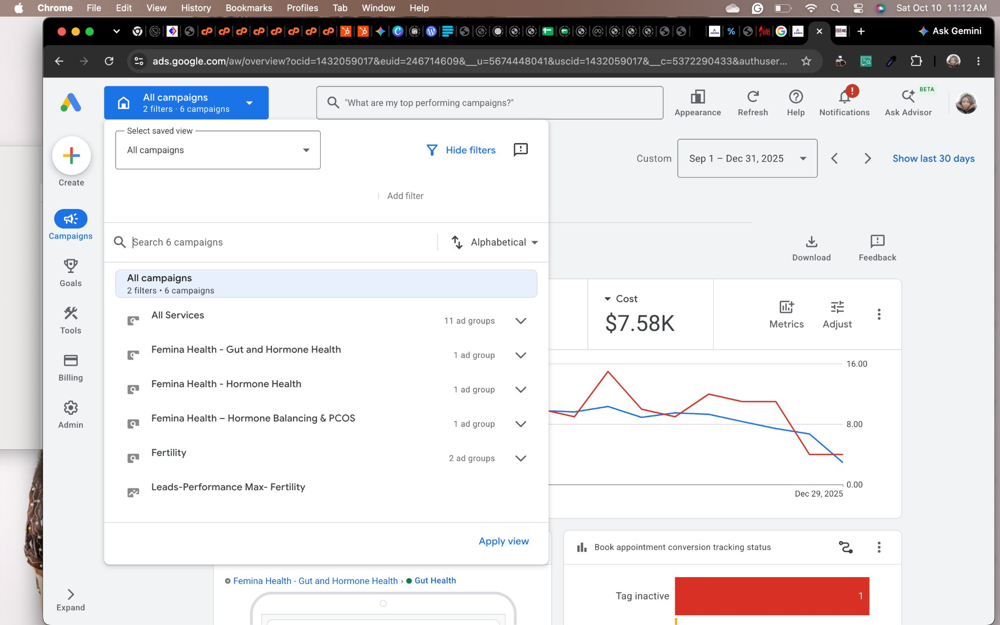
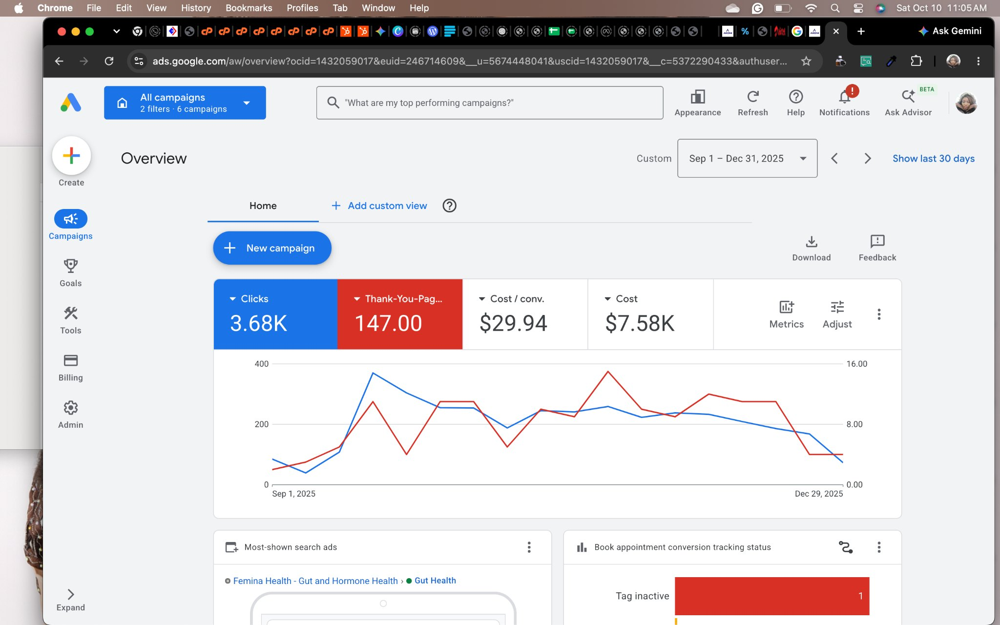

Research
Researched relevant keywords and audiences, then developed personas to inform campaign and page decisions.
CASE STUDY 01 · PAID ACQUISITION · CONVERSION STRATEGY
How I approached Google Ads, service-specific landing pages and behavioural analytics for Femina Health, a women-focused naturopathic healthcare provider.
01 / The challenge
Femina Health wanted to encourage women to book appointments for naturopathic treatment. The clinic offered several service areas, including hormone health, gut health, fertility support, and energy, mood and stress support.
A generic ad-to-page journey would not necessarily reflect the reason a person was searching. My approach was to connect the intent behind the search with the most relevant service, then measure how visitors interacted with the page.
Strategic principle
Make the path from a specific treatment need to the next booking step as relevant and clear as possible.
02 / The approach
A connected workflow across research, campaign structure, page experience and analytics.
Researched relevant keywords and audiences, then developed personas to inform campaign and page decisions.
Created separate campaigns around service areas, including hormone health, gut health and fertility-related treatment needs.
Created service-specific landing pages so ad intent and page content were more closely aligned.
Integrated Google Analytics and Microsoft Clarity. Used behavioural analytics and heatmaps to investigate page engagement and identify optimization opportunities.
03 / Landing-page evidence
The screenshots below are captures of the actual Femina Health pages supplied for this case study. Each page has its own service focus and a prominent discovery-call action.

Connects hormone-related concerns with a service-specific explanation and discovery-call CTA.

Speaks to digestive concerns and provides a direct next step.

Addresses reproductive-health concerns and presents a discovery-call CTA.
Screenshot note: the supplied capture shows a gut-health hero heading alongside fertility copy. Verify the live page before using this image as proof of the final page state.

Frames common concerns and directs visitors toward a discovery call.
04 / Campaign evidence
The historical Google Ads account view shows six campaigns, including campaigns for gut and hormone health, hormone balancing and PCOS, fertility, and Performance Max for fertility. Campaigns are no longer managed by me and their current status is not represented here.
The campaign-structure screenshot has status indicators obscured for privacy and relevance. It is not a representation of current campaign status.

Open screenshot ↗05 / Measurement
I integrated Google Analytics and Microsoft Clarity to improve visibility into website behaviour. Heatmaps helped me examine how visitors interacted with landing pages and identify opportunities to optimize the experience.
The historical Google Ads overview screenshot shows 3.68K clicks and 147 thank-you-page conversions for the selected Sep 1–Dec 31, 2025 date range. It also displays $7.58K cost and $29.94 cost per conversion. These dashboard values do not reconcile arithmetically if treated as the same cost and conversion set, so they should be confirmed against an export before being used as a definitive efficiency claim.

Measurement limitation
I no longer have access to the client’s Google Ads, Analytics or Clarity accounts, so I cannot retrieve exports or re-validate the historical tracking setup. The figures are presented as recorded evidence, not as independently audited results.
06 / Outcomes
Reported proportion of leads that became paying customers. The underlying CRM record is no longer available.
Reported outcome from the engagement. The original revenue and cost calculation should be recovered before this is presented as a fully verified financial result.
Four service areas are represented in the screenshots collected for this case study.
The work combined intent-led research, service-level campaign segmentation, relevant landing pages and behavioural analytics. The strongest next step would be to validate the historical financial and conversion figures from an approved report if one becomes available.
More selected work